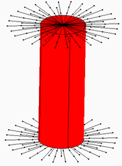
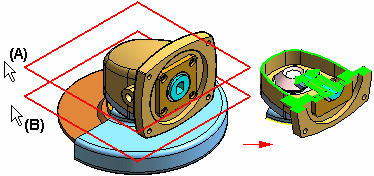

Control the visibility of assembly features
There are several options for controlling what is shown on a complex assembly model in the Simulation Results environment. You can combine these to produce the best results.
Control mesh visibility on the model
-
Do any of the following in the Simulation tree-view pane in the Simulation Results environment:
-
(Model level control) Right-click the Mesh node, and then choose one of the following commands:
-
Show All
-
Hide All
-
-
(Part level control) Expand the Mesh node, and then select and deselect the check boxes corresponding to each part.
-
(Connector object control) Select or deselect the Connector Mesh check box to control the visibility of all connector mesh objects as a group. These include spider, rigid, and beam objects such as this one:

-
Expose interior objects
Use the Solid Edge display depth commands to control the visibility of parts in a complex part or assembly.
-
Select the View tab→Clip group→Set Planes command to set the clipping depth in a window.
Example:The distance between planes (A) and (B) is the extent of the model that will be displayed.

-
Select the View tab→Clip group→Clipping On command to display the newly defined clipping depth.
-
Select the command again to turn clipping off, restoring the full simulation results.
To learn how to use these commands, see the Controlling the display depth in a 3D window help topic in the Solid Edge Help.
Match the color bar to visible results
-
Select the Color Bar tab→Scale group→Visible Results command to show just the portions of the color bar that correspond to the currently displayed simulation results.
The color bar values, colors, and min/max values update automatically in the graphics window.